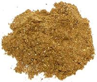

 |
Garam Masala - BengaliIndia - Bengal - Garam Masala | ||||
| Makes: Effort: Sched: DoAhead: |
5 T * 15 min Yes |
The Garam Masala of Bengal is much simpler than those of the Punjab and the rest of northern India. Traditionally, Bengalis leave the ingredients out in the hot sun for a day before grinding, but many younger Bengalis lightly dry toast them as is done in other parts of India. | |||
| Younger Bengalis may also add other ingredients, particularly dried red chilis, and perhaps mace. Note that the relative proportions of the ingredients are quite variable from household to household. Makes about 5 Tablespoons. | |||||
|
6 20 40 3 |
in |
Cinnamon (1) Cloves Cardamom pods (2) Bay Leaf (3) |
Make - (15 min)
|